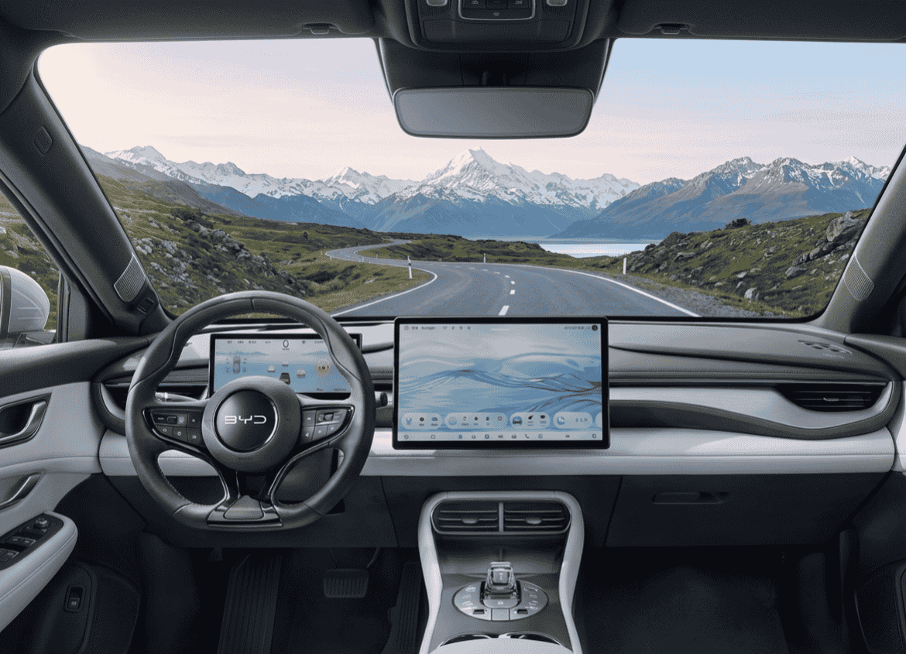

Cada vez que BYD presenta un modelo nuevo en China, el sector europeo del automóvil aguanta la respiración. Y con razón. La compañía de Shenzhen lleva años demostrando que puede fabricar coches eléctricos con especificaciones de gama alta a precios que sus rivales occidentales considerarían imposibles. El BYD Seal 06 GT es su última demostración de fuerza: un hatchback deportivo del segmento C con 620 kilómetros de autonomía declarada, carga ultrarrápida de última generación y un precio de salida en China de unos 17.700 euros al cambio actual.
Pero antes de que nadie empiece a compararlo directamente con lo que podemos comprar hoy en un concesionario español, hay que aplicar el mismo rigor que aplicaríamos a cualquier otro lanzamiento: leer la letra pequeña, entender qué significa ese precio en origen y calcular cuánto acabaría costando realmente en nuestro mercado.
Héroe local o aspiración global: el contexto
El primer dato que hay que tener claro es que, a fecha de hoy, el Seal 06 GT es un producto exclusivo para el mercado chino. BYD lo ha presentado allí y no ha comunicado ninguna fecha oficial de lanzamiento para Europa. Eso significa que los 17.700 euros que se citan en todos los titulares son el precio "de fábrica" en China, sin ninguno de los costes adicionales que implica traer un vehículo al mercado europeo.
Y esos costes no son menores. La Unión Europea aplica actualmente un arancel adicional del 17% a los vehículos eléctricos fabricados en China por BYD, según la decisión de la Comisión Europea de octubre de 2024. Ese único concepto ya añade unos 3.000 euros al precio base. Suma el transporte marítimo, la homologación al ciclo WLTP europeo, el margen del importador y el IVA del 21%, y la versión de acceso en España podría rondar los 28.000-30.000 euros en el escenario más optimista.
⚠️ Lo que los titulares no te cuentan
El precio de 17.700€ es el precio en China, sin aranceles UE (17%), sin IVA español (21%), sin costes de homologación WLTP, sin transporte ni margen del importador. El precio final en España podría ser entre un 60% y un 70% superior al precio chino de partida.
Especificaciones técnicas: la letra pequeña
Dicho esto, las especificaciones del Seal 06 GT son genuinamente llamativas. BYD lo ha construido sobre su plataforma e-Platform 3.0 Evo, con arquitectura de 800 voltios y su nueva batería Blade de segunda generación en química LFP (litio-ferrofosfato), presentada en marzo de 2026. El modelo se ofrece en cuatro versiones principales según informa ForoCochesEléctricos:
| Versión | Potencia | Batería | Autonomía (CLTC) | 0-100 km/h |
|---|---|---|---|---|
| 520 / 520 Plus | 268 CV (200 kW) | 57,54 kWh | 520 km | n/d |
| 620 Plus / Max | 268 CV (200 kW) | 69,07 kWh | 620 km | n/d |
| Tracción integral (AWD) | 422 CV (310 kW) | 72,96 kWh | 605 km | 4,9 s |
La cifra de 4,9 segundos en el 0-100 km/h de la versión AWD es un dato excelente para un compacto de segmento C. Para ponerlo en contexto: el MG4 XPOWER logra esa misma aceleración por alrededor de 32.000 euros en España, y el Cupra Born VZ alcanza los 326 CV con un 0-100 en 5,2 segundos. El Seal 06 GT no es el rey indiscutible en rendimiento puro, pero es un competidor serio.
Autonomía: la conversación pendiente
La cifra de 620 km es la que más titulares ha generado. Pero hay que hablar de ella con honestidad: esos 620 km están medidos en ciclo CLTC, el estándar chino de homologación, que es considerablemente más optimista que el ciclo WLTP que se utiliza en Europa. El CLTC emplea velocidades medias más bajas y condiciones de temperatura más favorables.
A falta de una homologación WLTP oficial, que aún no existe para este modelo, una estimación razonable en uso mixto europeo para la versión de 69 kWh rondaría los 480-500 km. Es una cifra muy buena —el MG4 Luxury homologa 435 km WLTP y el Volkswagen ID.3 Pro S llega a 559 km WLTP—, pero que aleja al Seal 06 GT de ese titular de los 620 km que muchos medios están repitiendo sin matices.
📊 CLTC vs WLTP: una diferencia que importa
En general, la autonomía WLTP real de un vehículo eléctrico suele ser entre un 15% y un 25% inferior a la autonomía declarada en ciclo CLTC. Para el Seal 06 GT con 620 km CLTC, eso equivale a una estimación WLTP de entre 465 y 527 km. Una cifra excelente, sí, pero no 620 km.
Dimensiones y habitabilidad
Con 4,63 metros de longitud, 1,88 m de anchura, 1,49 m de altura y una batalla de 2,82 metros, el Seal 06 GT es ligeramente más grande que sus rivales directos en el segmento C. Esa mayor distancia entre ejes es consecuencia de estar construido sobre una plataforma diseñada específicamente para vehículos eléctricos, sin los compromisos de espacio que implica adaptar una plataforma de combustión.
| Modelo | Longitud | Batalla | Segmento |
|---|---|---|---|
| BYD Seal 06 GT | 4,63 m | 2,82 m | C |
| MG4 Electric | 4,29 m | 2,71 m | C |
| Volkswagen ID.3 | 4,26 m | 2,77 m | C |
| Cupra Born | 4,32 m | 2,77 m | C |
En papel, esa mayor batalla debería traducirse en más espacio para los pasajeros traseros. A falta de poder comprobarlo en persona, es un punto a favor que distingue al Seal 06 GT de sus rivales más compactos.

El interior del Seal 06 GT apuesta por una estética deportiva y minimalista con gran pantalla central giratoria
La carga ultrarrápida: el verdadero as bajo la manga
Si hay un aspecto en el que el Seal 06 GT puede marcar una diferencia real respecto a sus rivales actuales, es en la velocidad de carga. La nueva batería Blade de segunda generación, anunciada por BYD en marzo de 2026 según recoge Auto Bild, puede cargarse del 10% al 70% en solo 5 minutos y del 10% al 97% en 9 minutos utilizando los cargadores específicos de BYD de hasta 1.500 kW. Incluso en condiciones de frío extremo a -30 ºC, logra cargar del 20% al 97% en 12 minutos, según El Periódico.
Son cifras que dejan en evidencia a buena parte de la competencia europea. El problema, y es un problema importante, es que esa infraestructura no existe en Europa. Los cargadores de 1.500 kW simplemente no están desplegados en nuestro continente. La red más rápida disponible actualmente —Ionity, Tesla V4, algunos puntos de Repsol y BP— llega a 350 kW como máximo.
Con esa potencia, el Seal 06 GT podría cargar del 10% al 80% en unos 18-20 minutos, un tiempo igualmente muy competitivo pero muy lejos de los 9 minutos prometidos. BYD ha anunciado su intención de desplegar su propia red de carga ultrarrápida en Europa, pero ese proceso llevará años.
⚡ Velocidades de carga en perspectiva
- • Con cargador BYD de 1.500 kW (China): 10% → 97% en 9 minutos
- • Con cargador de 350 kW (Europa, estimado): 10% → 80% en ~18-20 minutos
- • MG4 XPOWER con 150 kW: 10% → 80% en ~35 minutos
- • Volkswagen ID.3 Pro S con 170 kW: 10% → 80% en ~28 minutos
Incluso limitado por la infraestructura europea, el Seal 06 GT sería el compacto eléctrico con carga más rápida del segmento.
Precios en España: la clave de todo
El precio final en España es, en última instancia, lo que determinará si el Seal 06 GT es un éxito comercial o un mero ejercicio de marketing. Partiendo del precio chino de 17.700 euros, estos son los conceptos adicionales que habría que sumar:
| Concepto | Coste estimado |
|---|---|
| Precio en China (versión base) | 17.700 € |
| Arancel UE (+17%) | ~3.000 € |
| Transporte y logística | ~800 € |
| Homologación WLTP | ~500 € |
| Margen del importador | ~2.000 € |
| Subtotal antes de impuestos | ~24.000 € |
| IVA (21%) | ~5.000 € |
| Precio final estimado en España | ~29.000 € |
Estas cifras son estimaciones. BYD no ha confirmado ningún precio oficial para España. La versión AWD de 422 CV podría acercarse a los 38.000-40.000 euros con el mismo razonamiento. Y hay un factor que podría cambiarlo todo: si BYD confirma la fabricación del Seal 06 GT en su planta húngara de Szeged, los aranceles desaparecerían y el precio podría ser sensiblemente inferior.
Rivales: ¿puede con todos?
En papel, el Seal 06 GT parece un competidor formidable en el segmento C eléctrico. Veamos cómo se compara con sus rivales más directos disponibles hoy en España:
| Modelo | Potencia | Precio en España | Autonomía WLTP |
|---|---|---|---|
| BYD Seal 06 GT (est.) | 268-422 CV | ~29.000-40.000 € | ~480-500 km (est.) |
| MG4 Luxury | 204 CV | ~28.000 € | 435 km |
| MG4 XPOWER | 435 CV | ~32.000 € | 385 km |
| Cupra Born VZ | 326 CV | ~48.000 € | 450 km |
| Volkswagen ID.3 Pro S | 204 CV | ~42.000 € | 559 km |
El rival más directo y más incómodo para el Seal 06 GT es el MG4 XPOWER: 435 CV, 0-100 en 3,8 segundos y un precio de unos 32.000 euros en España. Si el Seal 06 GT llega a los 29.000 euros en su versión de acceso con 268 CV, el XPOWER ofrece más potencia y más deportividad por solo 3.000 euros más, aunque con menos autonomía. El Seal 06 GT tendrá que justificar su propuesta de valor en la velocidad de carga, la mayor autonomía y unas dimensiones más generosas.
Frente al Volkswagen ID.3, la comparativa es diferente: el ID.3 Pro S tiene más autonomía WLTP certificada, una red de servicio postventa consolidada en España y la confianza de marca del Grupo Volkswagen. Pero lo hace por 42.000 euros, frente a los posibles 29.000 del BYD. Esa diferencia de precio es muy difícil de ignorar.
La estrategia global de BYD: Hungría cambia las reglas
El verdadero movimiento estratégico de BYD en Europa no es lanzar coches baratos desde China pagando aranceles. Es fabricarlos directamente en suelo europeo. Su primera gran planta europea, ubicada en Szeged (Hungría), comenzará a producir en el segundo trimestre de 2026, según confirma Europa Press. Con producción local, BYD evita por completo los aranceles de importación, lo que podría reducir el precio final de sus modelos de forma muy significativa.
Como detalla ForoCochesEléctricos, modelos como el Dolphin, el Atto 3 y el Seal ya están confirmados para fabricarse en Hungría. El Seal 06 GT aún no está en esa lista confirmada, pero si BYD lo incluyera, las cifras de precio estimadas que hemos calculado podrían bajar considerablemente. Esa es la verdadera revolución silenciosa que BYD está preparando en Europa.
🏭 Lo que la planta húngara cambia para los compradores europeos
- ✓ Sin aranceles de importación: ahorro de ~3.000 € en el precio final
- ✓ Menores costes logísticos: transporte desde Hungría vs. desde China
- ✓ Plazos de entrega más cortos: semanas en lugar de meses
- ✓ Mayor adaptación al mercado europeo: homologaciones más ágiles
- ✓ Imagen de marca más local: "fabricado en Europa" como argumento comercial
Conclusión: ¿comprar o esperar?
Si estás buscando un compacto eléctrico deportivo hoy mismo, el MG4 XPOWER ya está disponible por 32.000 euros en España, con red de servicio, garantía y plazos de entrega conocidos. Es una opción sólida y sin las incertidumbres de un modelo que aún no tiene fecha de llegada a Europa.
Pero si puedes esperar a finales de 2026 o principios de 2027, el Seal 06 GT promete una combinación muy atractiva: más autonomía real que casi cualquier compacto del segmento, tecnología de carga que no tiene rival en Europa, dimensiones generosas y un precio que, dependiendo de la estrategia de BYD con su planta húngara, podría ser genuinamente competitivo.
La clave está en dos incógnitas que BYD aún no ha despejado: si confirmará la fabricación del Seal 06 GT en Hungría y, por tanto, si podrá evitar los aranceles europeos que encarecen tanto su producto. Si eso ocurre, el Seal 06 GT podría convertirse en el coche que redefiniera el segmento C eléctrico en Europa. Si no, será un competidor más en una categoría muy disputada, compitiendo con el MG4 en precio y con el ID.3 en confianza de marca, sin ganar claramente en ninguno de los dos frentes.
Por ahora, el entusiasmo está justificado pero la prudencia también. Es lo que toca con BYD en Europa: admirar las especificaciones, calibrar los precios reales y esperar a que lleguen las confirmaciones oficiales.
Fuentes
📌 Referencias utilizadas en este artículo:
-
ForoCochesEléctricos – Carga en 10 minutos, 620 km de autonomía y desde 18.700 euros: llega el nuevo BYD Seal 06 GT (04/04/2026)
forococheselectricos.com -
DiarioMotor – BYD Seal 06 GT 2026: características, precios y versiones
diariomotor.com -
El País Motor – Seal 06 GT: ¿cuándo llega y cuánto costará el nuevo BYD?
motor.elpais.com -
Auto Bild – BYD anuncia una batería de segunda generación con carga en 5 minutos (14/03/2026)
autobild.es -
El Periódico – Con BYD es posible cargar un coche eléctrico en 5 minutos (16/03/2026)
elperiodico.com -
Autofácil – MG4 Urban frente a Dolphin, ID.3 y Born: ¿cuál ofrece más por menos? (12/02/2026)
autofacil.es -
El Economista – BYD refuerza su ofensiva en Europa: así será la gama que llegará a España en 2026 (08/01/2026)
eleconomista.es -
ForoCochesEléctricos – Desde 2026 verás muchos más BYD en Europa y esta es la razón (13/12/2025)
forococheselectricos.com -
Europa Press – BYD empezará a fabricar coches en Hungría en el segundo trimestre de 2026 (20/11/2025)
europapress.es -
Hipertextual – BYD vuelve a romper el mercado con su nuevo eléctrico (04/2026)
hipertextual.com
Preguntas frecuentes sobre el BYD Seal 06 GT
FAQ – BYD Seal 06 GT
🔹 ¿Cuánto costará el BYD Seal 06 GT en España?
El BYD Seal 06 GT parte de unos 17.700 euros en China (136.800 yuanes al cambio actual). Sumando el arancel europeo del 17%, transporte, homologación WLTP, margen del importador e IVA del 21%, la versión de acceso en España podría rondar los 28.000-30.000 euros en el escenario más optimista si se importa desde China. Si BYD confirma su fabricación en la planta húngara de Szeged, el precio podría ser sensiblemente inferior al evitar los aranceles. La versión AWD de 422 CV podría acercarse a los 38.000-40.000 euros. Estas son estimaciones: BYD no ha confirmado ningún precio oficial para España a fecha de abril de 2026.
🔹 ¿Cuál es la autonomía real del BYD Seal 06 GT?
BYD anuncia 620 km en ciclo CLTC, el estándar chino de homologación, que es más optimista que el ciclo WLTP europeo. A falta de una homologación WLTP oficial, una estimación realista para la versión de 69 kWh en uso mixto europeo rondaría los 480-500 km. La versión AWD con batería de 72,96 kWh podría homologar alrededor de 460-480 km WLTP. Son cifras muy competitivas dentro del segmento C, aunque alejadas de los 620 km que aparecen en los titulares.
🔹 ¿Cuándo llegará el BYD Seal 06 GT a España?
BYD no ha comunicado ninguna fecha oficial de llegada del Seal 06 GT a Europa ni a España a fecha de abril de 2026. El modelo se ha presentado exclusivamente para el mercado chino. Las estimaciones más realistas, teniendo en cuenta los procesos habituales de homologación y la estrategia de BYD en Europa, apuntan a finales de 2026 o principios de 2027. El factor clave será si BYD confirma la fabricación del modelo en su planta húngara de Szeged, que comenzó a operar en el segundo trimestre de 2026.